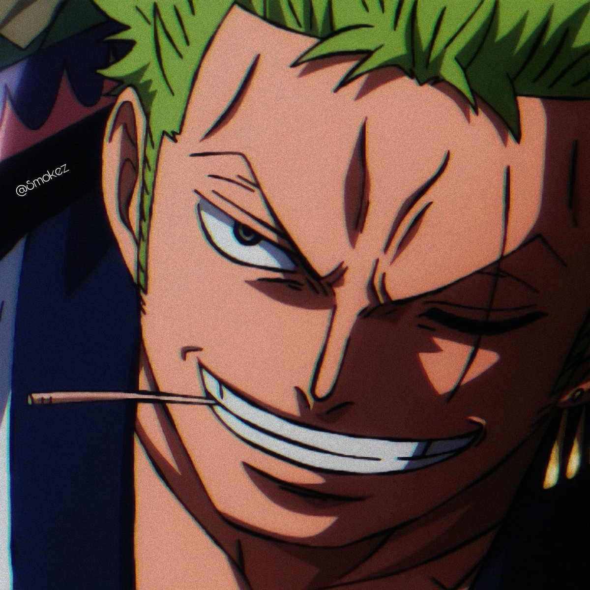
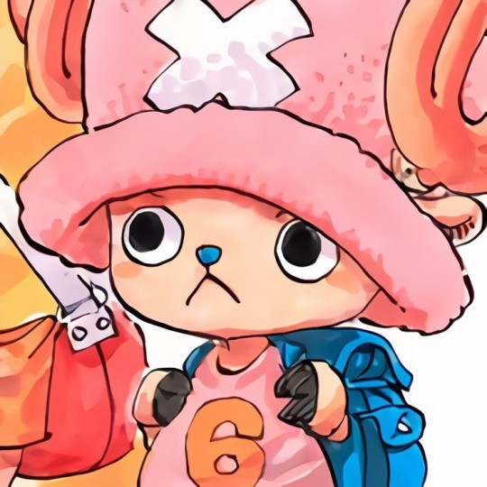
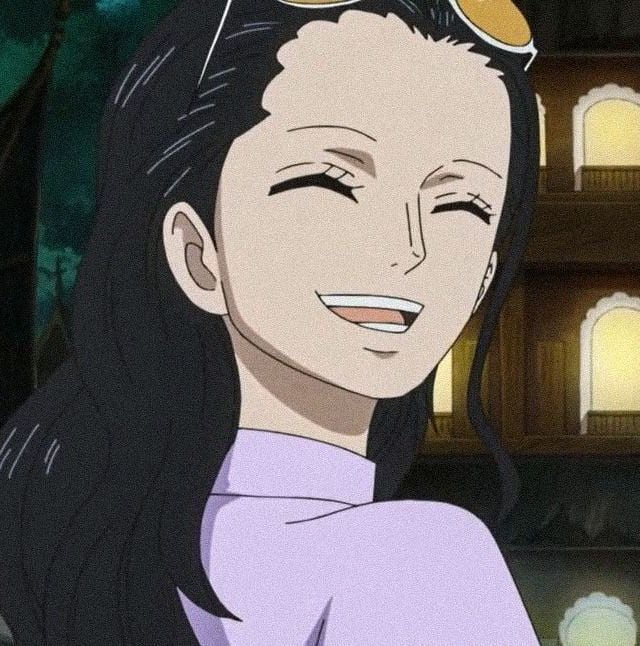
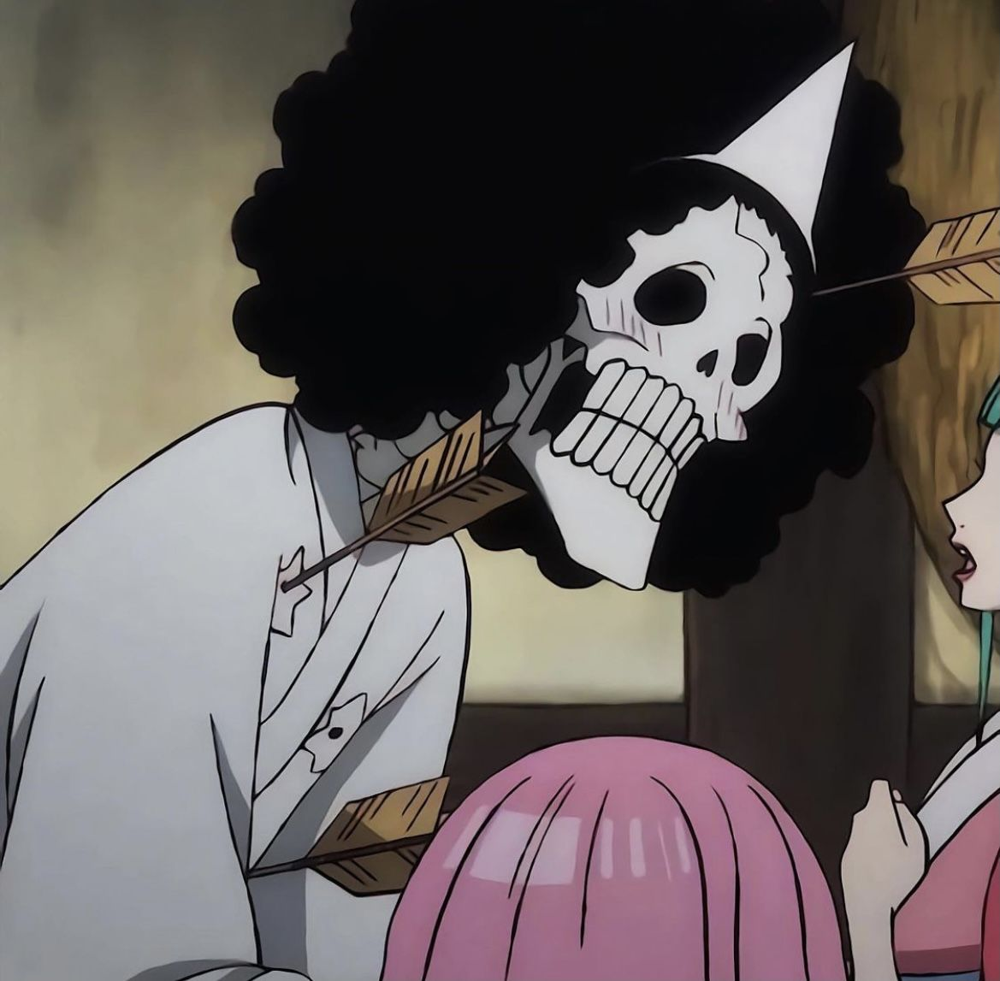

Roronoa Zoro
Roronoa Zoro (ロロノア・ゾロ) is a swordsman who uses up to three swords simultaneously, holding one in each hand and a third in his mouth.
[ch. 3, 5, 28] To fulfill a promise to Kuina, his deceased childhood friend and rival, he aims to defeat "Hawk Eye" Mihawk and become the world's greatest swordsman.[ch. 5, 50]
Conoce más

Tony Tony Chopper
Tony Tony Chopper (トニートニー・チョッパー, Tonī Tonī Choppā) is a doctor and a blue-nosed reindeer.
The power of the Zoan-type Human-Human Fruit (ヒトヒトの実, Hito Hito no Mi) provides him with the ability to transform into a full-sized reindeer or a reindeer-human hybrid.
Conoce más

Nico Robin
Being raised in Ohara (オハラ), home of the world's oldest and largest library, Nico Robin (ニコ・ロビン, Niko Robin) becomes an archaeologist at the age of eight.[ch. 218,391f.]
At some point she gains the power of the Paramecia-type Flower-Flower Fruit (ハナハナの実, Hana Hana no Mi).
Conoce más

Brook
Already a pirate before the time of Roger, "Humming" Brook (ブルック, Burukku) first enters the Grand Line as a member of the music-themed Rumbar Pirates. Leaving their pet the infant whale Laboon (ラブーン, Rabūn) at Reverse Mountain,
they promise to return after sailing around the world.
Conoce más